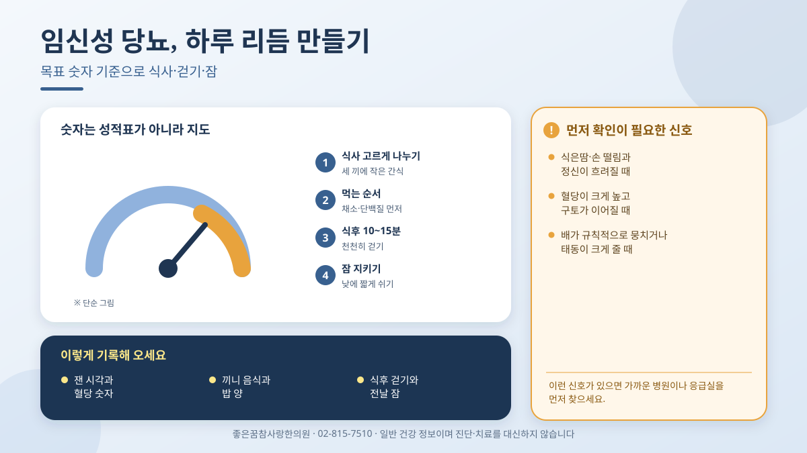

이종호 한의사 감수좋은꿈참사랑한의원 대표원장 (한의사 면허번호 19769)발행 2026-11-26 · 수정 2026-11-26
이 글의 차례
검사 결과 문자를 받은 날, 저녁 밥상 앞에서 숟가락이 쉽게 들리지 않습니다. 임신성 당뇨라는 말이 낯설고 무겁게 느껴지고, 혹시 내가 뭘 잘못 먹어서 그런 건 아닐까 하는 생각이 머릿속을 맴돕니다. 아기에게 미안한 마음까지 겹쳐 밥맛이 사라집니다.
진료실에서 이 이야기를 꺼내시는 분들 가운데 많은 분이 스스로를 탓하십니다. 하지만 임신성 당뇨는 누군가의 잘못으로 생기는 것이 아닙니다. 임신이라는 큰 변화 속에서 몸이 혈당을 다루는 방식이 달라지는 것이고, 꽤 많은 분이 겪는 일입니다.
그리고 임신성 당뇨는 관리할 수 있는 일입니다. 산부인과에서 정해 준 목표 숫자를 기준으로 식사를 나누고, 식후에 조금 걷고, 혈당을 재어 적는 일. 처음에는 복잡해 보이지만 몇 주만 지나면 하루의 리듬으로 자리 잡는 경우가 많습니다.
이 글은 산부인과에서 받은 관리 계획을 대신하는 것이 아닙니다. 그 계획을 하루하루 생활 속에서 이어 가실 수 있도록, 진료실에서 자주 나누는 이야기를 정리한 것입니다.
임신성 당뇨는 무엇인가요
임신성 당뇨는 임신 전에는 당뇨가 없었는데, 임신 중에 혈당이 기준보다 높게 나오는 상태를 말합니다. 보통 임신 중기에 당부하 검사를 통해 확인하는 경우가 많습니다. 달콤한 음료를 마시고 일정 시간 뒤 혈당을 재는 그 검사입니다.
임신성 당뇨를 관리하는 이유는 엄마와 아기 모두를 위해서입니다. 혈당이 오랫동안 높으면 아기가 너무 크게 자라거나, 출산 과정이 힘들어지거나, 태어난 뒤 아기 혈당이 흔들리는 일이 생길 수 있다고 알려져 있습니다. 그래서 산부인과에서는 목표 숫자를 정하고 꾸준히 확인합니다.
대부분은 출산 뒤 혈당이 원래대로 돌아옵니다. 다만 나중에 당뇨가 생길 가능성이 조금 높아지는 것으로 알려져 있어서, 출산 뒤에도 정기적으로 혈당을 확인하시길 권합니다. 임신성 당뇨는 앞으로의 건강을 챙길 계기가 되기도 합니다.
왜 임신 중에 혈당이 오를까요
임신 중기 이후에는 태반에서 여러 호르몬이 나옵니다. 이 호르몬들은 아기에게 영양을 충분히 보내기 위해 엄마 몸에서 인슐린이 덜 듣도록 만듭니다. 인슐린은 혈당을 세포 안으로 넣어 주는 열쇠 같은 역할을 하는데, 이 열쇠가 잘 안 듣게 되는 것입니다.
대부분의 몸은 인슐린을 더 많이 만들어 이 변화를 따라갑니다. 그런데 따라가는 힘이 조금 부족하면 혈당이 기준보다 높게 나옵니다. 임신성 당뇨가 생기기 쉬운 경우로 알려진 것들은 이렇습니다.
- 가족 가운데 당뇨를 앓는 분이 있는 경우
- 임신 전 체중이 많이 나갔거나, 임신 중 체중이 빠르게 늘어난 경우
- 이전 임신에서 임신성 당뇨가 있었던 경우
- 다낭성 난소 증후군이 있었던 경우
- 나이가 비교적 많은 임신인 경우
이런 요인이 없어도 임신성 당뇨는 생길 수 있습니다. 반대로 요인이 있어도 생기지 않는 분도 많습니다. 그러니 '내가 무엇을 잘못했나'보다 '지금부터 무엇을 하면 되나'에 마음을 두시면 좋겠습니다.
일반 당뇨와는 무엇이 다른가요
임신성 당뇨는 임신 중에 생겨 대부분 출산 뒤 사라진다는 점에서 평소 알던 당뇨와 다릅니다. 관리의 기준도 다릅니다. 임신 중에는 엄마와 아기를 함께 생각해야 해서, 산부인과에서 정해 주는 목표 숫자가 일반 당뇨보다 더 촘촘한 경우가 많습니다.
식사 관리도 방향이 조금 다릅니다. 일반 당뇨에서는 체중을 줄이는 것을 목표로 삼기도 하지만, 임신 중에는 아기가 자랄 영양을 충분히 챙기면서 혈당이 크게 오르내리지 않게 하는 것이 목표입니다. 무작정 굶거나 탄수화물을 완전히 끊는 것은 권하지 않습니다.
그래서 인터넷에서 본 당뇨 식단을 그대로 따라 하기보다, 산부인과나 영양 상담에서 받은 식사 계획을 기준으로 삼으시는 것이 좋습니다. 그 계획이 지금 내 몸과 아기에게 맞춰진 것이기 때문입니다.
혈당은 언제, 어떻게 재나요
혈당을 재는 시각과 횟수는 산부인과에서 정해 주는 대로 따르시면 됩니다. 흔히 아침 공복과 세 끼 식사 뒤 정해진 시간에 재는 방식을 씁니다. 식사 뒤 시간은 첫 숟가락을 든 시각부터 세는 경우가 많으니 정확히 확인해 두세요.
손끝을 찌르기 전에는 손을 씻고 물기를 완전히 말려 주세요. 손에 과일즙이나 로션이 남아 있으면 숫자가 높게 나올 수 있습니다. 같은 손가락만 계속 쓰기보다 손가락을 바꿔 가며 손끝 옆쪽을 찌르면 덜 아프다는 분이 많습니다.
숫자 하나에 마음이 흔들리실 수 있습니다. 한 번 높게 나왔다고 실패한 것이 아니라, 무엇을 먹었고 얼마나 움직였는지와 함께 보면 다음 끼니를 정할 단서가 됩니다. 숫자는 성적표가 아니라 지도라고 생각해 주세요.
먼저 이렇게 여쭙니다
처음 오시면 저는 대략 이런 순서로 여쭙니다. 미리 생각해 오시면 이야기가 훨씬 수월해집니다.
- 지금 임신 몇 주이고, 임신성 당뇨 진단은 언제 받으셨나요?
- 산부인과에서 정해 준 혈당 목표와 재는 시각은 어떻게 되나요?
- 식사 조절만 하시나요, 인슐린 같은 약도 쓰고 계신가요?
- 하루 식사와 간식은 몇 번, 어떤 시각에 드시나요?
- 잠은 몇 시간 주무시고, 밤에 몇 번 깨시나요?
- 입덧, 속쓰림, 변비, 붓기 가운데 함께 불편한 것이 있나요?
혈당 기록지나 휴대폰 앱 화면을 가져오시면 가장 좋습니다. 숫자와 함께 그날 무엇을 드셨는지 적어 두셨다면 이야기가 훨씬 구체적으로 이어집니다.
일상에서 먼저 해 볼 수 있는 것
임신성 당뇨 관리의 중심은 식사를 나누고, 식후에 움직이고, 잠을 지키는 것입니다. 산부인과에서 받은 식사 계획을 기준으로, 아래 습관을 하나씩 더해 보세요.
- 하루 세 끼에 작은 간식 두세 번을 더해 식사를 고르게 나누기
- 밥은 정해진 양을 지키고, 흰밥보다 잡곡을 섞은 밥 고르기
- 식사할 때 채소와 단백질 반찬을 먼저 드시고 밥은 나중에 드시기
- 과일은 한 번에 많이 말고 정해진 양을 간식으로 나눠 드시기
- 달콤한 음료와 과일 주스는 물이나 보리차로 바꾸기
- 식사 뒤 10~15분 천천히 걷거나 집 안에서 가볍게 움직이기
먹는 순서는 생각보다 도움이 됩니다. 같은 밥상이라도 나물과 생선을 먼저 드시고 밥을 나중에 드시면 식후 혈당이 덜 가파르게 오르는 분이 많습니다. 꼭꼭 씹어 천천히 드시는 것도 함께 해 보세요.
아침 공복 혈당이 높게 나온다면 전날 저녁 식사 시각과 잠자기 전 간식을 함께 살펴봅니다. 저녁을 너무 늦게 드시거나, 반대로 너무 일찍 드시고 밤새 빈속으로 계시는 것 모두 아침 숫자에 영향을 줄 수 있습니다. 잠자기 전 간식은 산부인과에서 정해 준 대로 드시면 됩니다.
외식과 간식은 어떻게 고르나요
직장에 다니시거나 집안일로 바쁘시면 외식과 배달 음식을 피하기 어렵습니다. 외식할 때는 국수나 덮밥처럼 한 그릇에 탄수화물이 몰린 메뉴보다, 반찬이 여러 가지 나오는 백반이나 생선구이 정식을 고르시는 편이 혈당 관리에 수월합니다. 밥은 정해진 양만 덜어 드시면 됩니다.
간식은 혈당을 고르게 유지하는 데 쓰는 작은 식사라고 생각해 주세요. 무가당 플레인 요구르트, 삶은 달걀, 두부, 견과류 한 줌, 오이나 방울토마토처럼 단맛이 적고 단백질이나 채소가 들어간 것을 미리 챙겨 두시면 좋습니다. 과자와 빵은 손이 닿는 곳에서 잠시 치워 두세요.
명절이나 모임처럼 음식이 많은 날에는 먹는 순서를 지키고, 식후에 가족과 함께 걷는 시간을 만들어 보세요. 하루 숫자가 조금 높았다고 다음 날 끼니를 거르는 것은 오히려 혈당을 흔들 수 있습니다. 다음 날은 평소 계획으로 돌아가시면 됩니다.
식후 걷기, 얼마나 어떻게 하나요
식사 뒤 가볍게 움직이면 근육이 혈당을 쓰면서 식후 혈당이 덜 오르는 데 도움이 될 수 있습니다. 거창한 운동이 아니어도 괜찮습니다. 숟가락을 내려놓고 10~15분, 동네 한 바퀴나 아파트 복도를 천천히 걷는 정도면 충분합니다.
밖에 나가기 어려운 날에는 집 안에서 설거지를 하거나, 제자리에서 천천히 걷거나, 의자에 앉아 발목을 돌리는 것도 좋습니다. 숨이 약간 차되 옆 사람과 이야기할 수 있을 정도가 적당합니다.
다만 산부인과에서 움직임을 줄이라고 들으셨다면 그 말씀을 먼저 따라 주세요. 배가 자주 뭉치거나 몸이 무거운 날에는 쉬는 것도 관리의 일부입니다. 걷다가 배가 뭉치면 멈추고 잠시 쉬어 가세요.
잠과 마음도 혈당과 이어져 있습니다
잠이 짧거나 자주 깨면 다음 날 혈당이 높게 나오는 분이 많습니다. 몸이 피곤하고 긴장하면 혈당을 올리는 호르몬이 늘어나기 때문입니다. 임신 후기에는 화장실 때문에 잠이 쪼개지기 쉬워서, 낮에 짧게 쉬는 시간을 챙겨 두시면 좋습니다.
혈당 숫자에 대한 걱정도 마음을 무겁게 합니다. 매 끼니가 시험처럼 느껴지고, 먹는 즐거움이 사라졌다고 말씀하시는 분이 많습니다. 숫자가 조금 높게 나온 날에는 스스로를 탓하기보다 '다음 끼니에 밥을 조금 줄여 보자' 정도로 가볍게 넘기셔도 괜찮습니다.
가족과 함께 식사 계획을 나누는 것도 도움이 됩니다. 함께 잡곡밥을 먹고, 식후에 같이 걷는 가족이 있으면 관리가 훨씬 덜 외롭습니다.
한의원에서 함께 살필 수 있는 경우
임신성 당뇨 관리는 산부인과가 중심입니다. 그 관리를 이어 가는 동안 이런 불편이 함께 있다면 상담해 보세요.
- 혈당 관리로 식사를 조절하면서 소화가 불편하고 속이 자주 더부룩한 경우
- 잠이 얕고 자주 깨서 아침 혈당과 컨디션이 함께 흔들리는 경우
- 손발과 다리가 붓고 몸이 무거워 걷기가 힘든 경우
- 허리와 골반이 아파 식후 걷기를 이어 가기 어려운 경우
- 걱정과 긴장으로 마음이 쉬지 못하는 경우
좋은꿈참사랑한의원에서는 맥을 짚고 혈당 기록과 식사, 잠, 붓기, 대소변을 함께 살핍니다. 혈당 숫자를 직접 조절하는 것이 아니라, 관리를 이어 가는 데 걸림돌이 되는 불편을 함께 찾는 데 마음을 둡니다.
진찰한 내용을 바탕으로 지금 상태에 맞는 방법을 정합니다. 침은 임신 중 피하는 자리를 가려 조심스럽게 쓰고, 식후 걷기를 이어 갈 수 있도록 허리와 다리의 불편을 함께 살핍니다. 한약은 임신 중임과 혈당 관리 중임을 먼저 알려 주시고, 산부인과 선생님과 상의한 뒤 신중하게 정합니다.
인슐린이나 다른 약을 쓰고 계신다면 혼자 멈추거나 양을 바꾸지 마세요. 약에 관한 모든 결정은 처방한 선생님과 상의해서 정하셔야 합니다.
이렇게 기록해 오시면 상담이 쉬워집니다
혈당 기록에 생활 기록을 한 줄씩만 더해도 흐름이 훨씬 잘 보입니다. 1~2주 정도 이렇게 적어 보세요.
- 혈당을 잰 시각과 숫자
- 끼니마다 드신 음식과 대략의 밥 양
- 식후 걷기를 했는지, 몇 분 했는지
- 전날 잠든 시각과 깬 시각, 밤에 깬 횟수
- 배 뭉침, 붓기, 속 불편 같은 몸의 변화
- 마음이 많이 쓰였던 날 표시
기록을 보면 '국수를 먹은 점심', '잠을 설친 다음 날 아침'처럼 숫자가 높았던 장면이 보입니다. 그 장면 하나를 바꾸는 것부터 시작하시면 됩니다. 다음에 오시면 기록지를 함께 펼쳐 놓고 이번 주에 바꿔 볼 장면 하나를 같이 골라 보겠습니다.
출산 뒤에도 챙겨 두실 것
출산 뒤에는 대부분 혈당이 원래대로 돌아옵니다. 그래서 관리가 끝났다고 생각하기 쉽지만, 출산 뒤 몇 주에서 몇 달 사이에 혈당 검사를 다시 받아 보시길 권합니다. 언제 받을지는 산부인과에서 안내해 주는 대로 따르시면 됩니다.
임신 중에 익힌 습관, 채소를 먼저 먹는 순서와 식후 걷기, 잡곡밥은 출산 뒤에도 그대로 이어 가시면 좋습니다. 임신성 당뇨를 지나온 시간이 앞으로 오래 건강하게 지내는 습관의 출발점이 될 수 있습니다.
이런 증상은 먼저 확인이 필요합니다
- 식은땀, 손 떨림, 심한 어지럼이 오면서 정신이 흐려지거나, 혈당이 목표보다 크게 높고 구토가 이어지는 경우
- 배가 규칙적으로 뭉치며 아프거나, 태동이 평소보다 눈에 띄게 줄어든 경우
이런 신호가 있으면 한의원보다 가까운 병원이나 응급실을 먼저 찾으세요.
함께 읽으면 좋은 글
- 임신 중이거나 임신 가능성이 있을 때는 한의원에 무엇을 알려야 하나요?
- 당뇨 전단계라고 들었을 때 식사 순서와 간식은 어떻게 살피나요?
- 당화혈색소(HbA1c) 수치는 무엇을 뜻하나요?
- 임신 중 발과 다리가 붓는 부종은 어디까지 흔하고, 생활에서는 어떻게 살피나요?
- 임신 중 밤에 잠이 오지 않거나 자주 깰 때는 무엇을 살피고 어떻게 지내나요?

여쭙는 것
- 지금 임신 몇 주이고, 임신성 당뇨 진단은 언제 받으셨나요?
- 산부인과에서 정해 준 혈당 목표와 재는 시각은 어떻게 되나요?
- 식사 조절만 하시나요, 인슐린 같은 약도 쓰고 계신가요?
생활에서 해 볼 것
- 하루 세 끼에 작은 간식 두세 번을 더해 식사를 고르게 나누기
- 밥은 정해진 양을 지키고, 흰밥보다 잡곡을 섞은 밥 고르기
- 식사할 때 채소와 단백질 반찬을 먼저 드시고 밥은 나중에 드시기
한의원에서 함께 살필 것
- 혈당 관리로 식사를 조절하면서 소화가 불편하고 속이 자주 더부룩한 경우
- 잠이 얕고 자주 깨서 아침 혈당과 컨디션이 함께 흔들리는 경우
- 손발과 다리가 붓고 몸이 무거워 걷기가 힘든 경우
먼저 확인이 필요한 신호
- 식은땀, 손 떨림, 심한 어지럼이 오면서 정신이 흐려지거나, 혈당이 목표보다 크게…
- 배가 규칙적으로 뭉치며 아프거나, 태동이 평소보다 눈에 띄게 줄어든 경우
한눈에 보는 표
| 구분 | 핵심 |
|---|---|
| 여쭙는 것 | 지금 임신 몇 주이고, 임신성 당뇨 진단은 언제 받으셨나요? 산부인과에서 정해 준 혈당 목표와 재는 시각은 어떻게 되나요? |
| 생활에서 해 볼 것 | 하루 세 끼에 작은 간식 두세 번을 더해 식사를 고르게 나누기 밥은 정해진 양을 지키고, 흰밥보다 잡곡을 섞은 밥 고르기 |
| 한의원에서 함께 살필 것 | 혈당 관리로 식사를 조절하면서 소화가 불편하고 속이 자주 더부룩한 경우 잠이 얕고 자주 깨서 아침 혈당과 컨디션이 함께 흔들리는 경우 |
| 먼저 확인이 필요한 신호 | 식은땀, 손 떨림, 심한 어지럼이 오면서 정신이 흐려지거나, 혈당이 목표보다 크게 높고 구토가 이어지는 경우 배가 규칙적으로 뭉치며 아프거나, 태동이 평소보다 눈에 띄게 줄어든 경우 |
자주 묻는 질문
임신성 당뇨면 밥을 아예 안 먹어야 하나요?
아닙니다. 임신 중에는 아기가 자랄 영양이 필요해서 탄수화물을 완전히 끊는 것은 권하지 않습니다. 산부인과나 영양 상담에서 정해 준 양을 지키면서 식사를 고르게 나누시는 것이 좋습니다.
혈당이 한 번 높게 나오면 아기에게 문제가 생기나요?
한 번의 숫자보다 여러 날의 흐름이 더 중요합니다. 높게 나온 날의 식사와 움직임을 함께 적어 두시고, 기록을 산부인과 선생님과 함께 보시면 됩니다.
임신성 당뇨가 있으면 한약을 먹으면 안 되나요?
임신 중이라는 사실과 혈당 관리 중이라는 사실을 먼저 알려 주세요. 산부인과 선생님과 상의한 뒤 지금 상태에 맞는지 신중하게 정하고, 드시는 약과 영양제도 함께 확인합니다.
식후에 꼭 걸어야 하나요?
식후에 가볍게 움직이면 혈당 관리에 도움이 될 수 있습니다. 다만 산부인과에서 움직임을 줄이라고 들으셨거나 배가 자주 뭉친다면 그 말씀을 먼저 따르시고 쉬셔도 됩니다.
출산하면 혈당 관리는 끝나나요?
대부분 출산 뒤 혈당이 원래대로 돌아오지만, 산부인과에서 안내하는 시기에 혈당 검사를 다시 받아 보시길 권합니다. 임신 중에 익힌 식사와 걷기 습관은 이어 가시면 좋습니다.
좋은꿈참사랑한의원은 재진 때 지난번 이야기부터 이어서 여쭙니다. 진료시간과 예약은 오시는 길에서 확인하세요.
어디서 상담받을 수 있나요?
좋은꿈참사랑한의원은 서울 동작구 만양로2길 2 신성빌딩 3층·5층(서울 동작구 상도동, 7호선 상도역 3번 출구 근처)에 있습니다. 한의사 3명(이종호 대표원장, 조영기 수석진료원장, 정원영 진료원장)이 진료합니다. 진료시간은 평일 09:30~20:00(점심 13:00~14:00), 토·일·공휴일 09:30~15:00이며, 방문 전 전화로 확인을 권합니다. 예약은 네이버 예약, 카카오톡 상담, 전화 02-815-7510로 받습니다.
이 글은 일반적인 건강 정보이며 개인의 진단이나 치료를 대신하지 않습니다. 증상이 있거나 복용 중인 약이 있다면 진료를 통해 확인하세요. 치료 효과는 개인마다 다를 수 있습니다.
작성 기준: 일반적으로 알려져 있는 건강 정보를 참고해 정리했습니다(대표원장 감수). 증상 기록은 1~2주 동안 하루 1회, 비슷한 시간에 적어 오시면 지난 상태와 비교하기 쉽습니다.